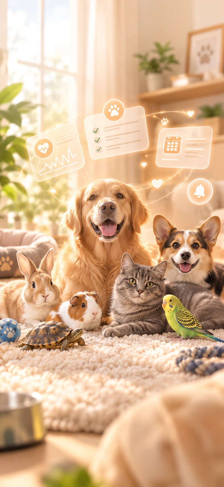
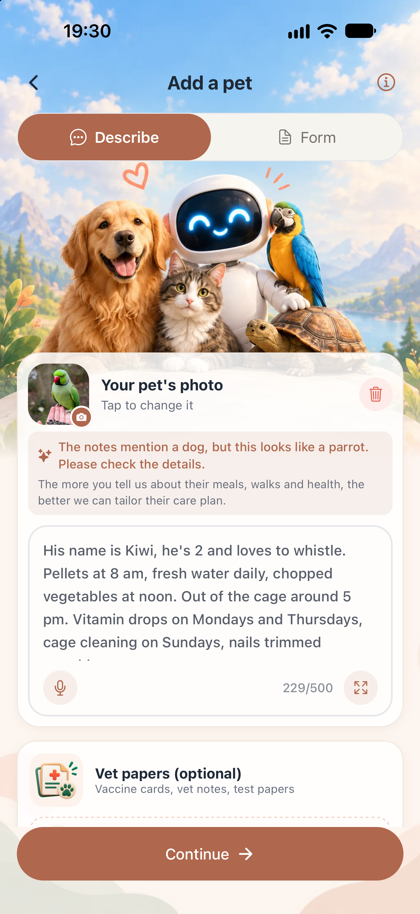

A dog, a cat and a parrot?

One app for all of them.
Switch pets in one tap.

Each pet gets their own routine.
Describe them in your words.

It even spots mix-ups.Notes say dog. Photo says parrot. PETTO asks you to check.

One app for all of them.
Each pet gets their own routine.
